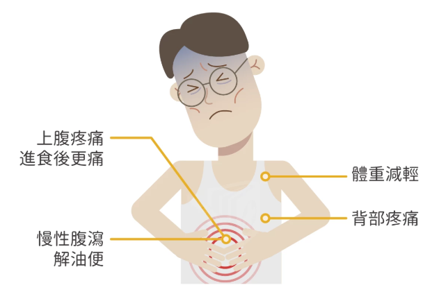
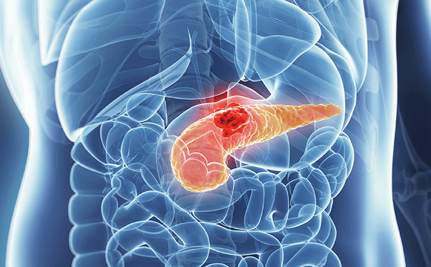
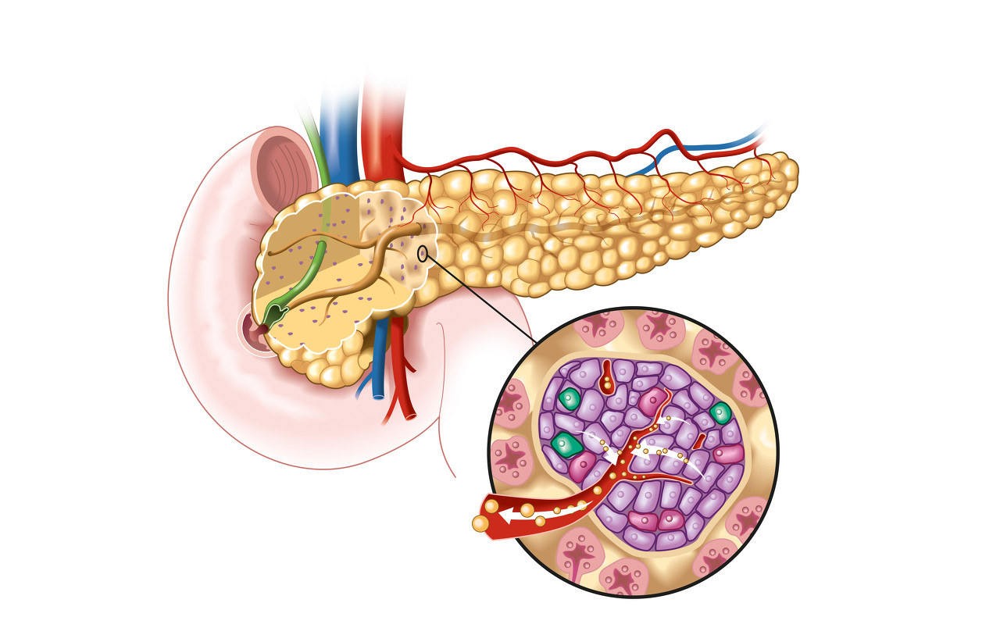
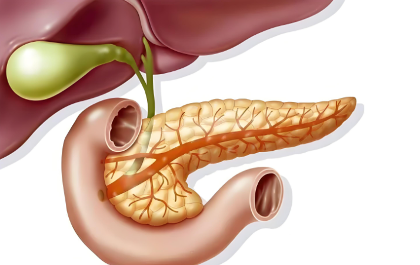

介紹
胰臟位於腹腔深處，兼具消化和內分泌功能。胰臟分泌的胰液含有多種消化酶，能分解碳水化合物、脂肪和蛋白質，幫助小腸吸收營養，並中和胃酸。胰島細胞分泌胰島素和胰高血糖素，調節血糖平衡，確保身體獲得所需能量。
急性胰臟炎
-
急性胰臟炎是胰臟因消化酶的異常活化而引發的急性炎症，可能導致胰臟組織損傷及周圍器官的功能障礙。
-
原因：
1.膽結石：胰液無法正常排出，引發炎症。 2.酗酒：引起胰臟的炎症及消化酶異常分泌。 3.高脂血症：導致胰臟血管損傷，誘發炎症。 4.藥物或毒素：某些藥物如免疫抑制劑、利尿劑及抗生素，或毒物如蠍毒。 5.其他病因：感染（病毒性腮腺炎）、創傷（手術或外傷）、自體免疫疾病、遺傳因素等。
- 症狀：急性胰臟炎的臨床表現依病情輕重有所差異：
1.主要症狀 ▸劇烈上腹痛：疼痛可能延至背部，進食後或躺平時加重。 ▸噁心與嘔吐：通常伴隨腹痛發作。 ▸發燒：可能輕度至中度。 2.重症表現 ▸腹部脹滿：由於腸道麻痺或腹腔積液引起。 ▸黃疸：如胰臟腫脹壓迫膽管，可能出現皮膚和眼睛黃染。 ▸休克或多器官衰竭：在嚴重病例中，炎症波及全身引發併發症。- 預防及管理：
1.控制代謝性疾病：定期檢查並控制血脂、血糖，特別是有家族史的人。 2.健康飲食：避免高脂肪、高膽固醇食物的過量攝取、戒酒 3.避免不必要的藥物使用，避免可能誘發胰臟炎的藥物 4.注意膽囊健康：預防膽結石，如有結石應及時治療以免阻塞胰管。慢性胰臟炎
-
與急性胰臟炎不同，慢性胰臟炎的發展較為緩慢，病程持續數年，期間可能反覆發作胰臟炎症。
- 原因：
1.酗酒：導致胰臟內酶過早激活，引發持續性炎症。 2.遺傳因素：遺傳性胰臟炎或囊性纖維化等。 3.阻塞性病因：胰管或膽管的長期阻塞（如結石、腫瘤或狹窄）引發炎症與纖維化。 4.自體免疫疾病：由免疫系統攻擊自身胰臟組織引起。 5.其他病因：高脂血症、反覆急性胰臟炎發作或吸煙等。
- 症狀因病程不同而變化，可表現為以下幾方面：
1.腹痛 ▸主要特徵：反覆性上腹部鈍痛向背部輻射，食高脂肪食物或酗酒後加重。 ▸進展期：疼痛可能減輕，但胰臟功能不全症狀明顯。 2.消化不良 ▸脂肪瀉：胰臟酶分泌不足脂肪無法正常消化，導致糞便油膩且異常惡臭。 ▸營養不良：吸收障礙可能導致體重減輕和維生素缺乏。 3.內分泌功能不全：胰島素分泌不足引發糖尿病症狀。 4.併發症：胰臟鈣化、胰管結石、假性囊腫、甚至胰臟癌等。
- 預防及管理：
1.戒酒與禁煙 2.定期檢查 3.及早治療 4.健康飲食：避免高脂、高糖、高鹽食物，適量補充蛋白質和維生素。 5.控制基礎疾病：如膽結石或高脂血症，應及時治療，防止胰管阻塞。
胰臟癌
-
胰臟癌是一種發生在胰臟的惡性腫瘤，進展快、早期症狀不明顯。主要分為胰頭癌、胰體癌和胰尾癌。
- 原因：
1.家族史：有胰臟癌或其他癌症家族史的人群發病風險更高。 2.基因突變：如BRCA2、KRAS、TP53等基因的突變可能導致腫瘤的形成。 3.生活方式因素：吸菸、高脂肪飲食、酗酒等間接增加胰臟癌風險。 4.環境暴露：接觸某些化學物質（如石油衍生物）可能增加胰臟癌的風險。 5.慢性疾病 ▸慢性胰臟炎：長期反覆的炎症可能導致細胞變異。 ▸糖尿病：尤其是近年新發糖尿病可能是胰臟癌的早期徵兆之一。
- 早期症狀通常不明顯，但隨著病程進展，可能出現以下表現：
1.黃疸：常見於胰頭癌，因腫瘤壓迫膽管，導致膽汁排出受阻，出現皮膚及眼白發黃、尿液深黃、大便灰白色。 2.腹痛：腹部隱痛或鈍痛，常位於上腹部，可輻射至背部。疼痛多在夜間或進食後加重。 3.體重減輕與消化不良：腫瘤影響胰臟的消化酶分泌，導致食慾減退、營養吸收不良和體重快速下降。 4.消化道症狀：噁心、嘔吐、腹瀉或便秘，可能由腫瘤壓迫胃腸道引起。 5.其他：疲憊、全身乏力、發燒等非特異性症狀。
- 預防及管理：
1.戒菸限酒 2.健康飲食 3.控制體重與血糖 4.減少環境暴露 5.早期篩查：對於有家族史或高風險人群（如慢性胰臟炎患者），定期進行胰臟超聲、CT或腫瘤標誌物檢測（如CA19-9）。
胰島細胞瘤
-
一種罕見的胰腺內分泌腫瘤，可分為功能性和非功能性兩類。功能性腫瘤會分泌過量的激素，如胰島素、胰高血糖素或胃泌素，導致特異性症狀（如低血糖或胃潰瘍）；非功能性腫瘤則不分泌激素，症狀通常與腫瘤的壓迫效應有關，且多在晚期才被發現。雖然大多數胰島細胞瘤為良性，但部分非功能性腫瘤可能具有惡性潛能，治療一般以手術切除為主。
-
原因：
1.遺傳因素：部分胰島細胞瘤與遺傳性疾病有關，如多發性內分泌腫瘤1型（MEN-1）。 2.細胞突變：胰島細胞的基因突變可能導致細胞異常增殖，形成腫瘤。 3.內分泌紊亂：內分泌系統調控異常可能促使腫瘤的發生。 4.環境和生活方式：長期不健康的飲食和慢性疾病（如糖尿病）的影響可能會增加患病風險。 5.其他藥物：化療藥物(紫杉醇)、抗癲癇藥物(卡馬西平)。
- 症狀：
1.功能性-胰島素瘤（分泌過量胰島素）： ▸低血糖症狀：頭暈、乏力、心悸、出汗、甚至昏迷。 ▸空腹或劇烈運動後症狀加重，進食糖分後症狀緩解。 2.功能性-胰高血糖素瘤（分泌胰高血糖素）： ▸高血糖症狀：口渴、多尿、體重減輕。 ▸皮膚紅疹、腹瀉。 3.非功能性腫瘤 ▸腫瘤壓迫導致的腹痛、噁心、嘔吐或消化道梗阻。 ▸若腫瘤惡性，可能出現體重減輕、黃疸或淋巴結腫大等症狀。- 預防及管理：
1.預防及管理 2.定期體檢：對有家族病史（如MEN-1）的高危人群，建議定期檢查血液激素水平和影像學檢查（如CT、MRI）。 3.慢性病管理：控制糖尿病、高血壓等基礎疾病，降低腫瘤相關風險。 4.基因檢測：對有家族病史者，考慮基因檢測以評估患病風險。 5.早期症狀重視：若出現不明原因的低血糖或腹痛等症狀，應及早就醫，進行血液激素檢測及影像學檢查。外分泌功能不足
-
是一種慢性消化系統疾病，主要特徵是胰臟酶分泌減少或胰酶無法有效發揮作用，導致食物中的脂肪、蛋白質和碳水化合物無法正常消化吸收。
- 症狀：：
1.消化不良：腹脹、腹痛、噯氣、食後不適、脂肪瀉。 2.營養不良： ▸維生素缺乏：尤其是脂溶性維生素（A、D、E、K）缺乏，可能引發視力問題、骨質疏鬆、凝血異常等症狀。 ▸蛋白質缺乏：導致水腫、疲勞和免疫力下降。 3.腸道症狀：腹瀉或排便次數增加，糞便顏色較淺且呈泡沫狀難沖洗。 4.系統性症狀：食慾減退、疲勞感加重，長期症狀可能導致貧血、骨骼問題及生長遲緩（特別是兒童）。
- 預防及管理：
1.健康生活方式：避免酗酒、戒菸、均衡飲食 2.及早診治胰臟疾病 3.避免高風險因素： ▸控制膽結石、胰管結石等疾病，減少胰管阻塞的風險。 ▸管理血糖，預防糖尿病對胰臟的損害。 4.定期健康檢查
1.胰臟本身的疾病： ▸慢性胰臟炎、胰臟癌 ▸急性胰臟炎後遺症：可能導致胰臟功能永久損害。 2.胰管阻塞或異常：胰管狹窄或畸形，如先天性疾病。 3.全身性疾病： ▸囊性纖維化：遺傳性疾病導致胰管內粘液堆積，阻礙酶的分泌。 ▸糖尿病：長期血糖不控制可能損害胰臟外分泌功能。 4.其他因素： ▸營養不良或酗酒 ▸胃腸手術（如胰頭十二指腸切除術）：可能損害胰臟或改變胰液的流動。糖尿病
-
當胰臟受到損害或功能異常時，胰島素的分泌會受到影響，導致血糖無法正常控制，最終引發糖尿病。
-
原因：
1.慢性胰臟炎：隨著病程的發展，慢性胰臟炎患者的胰島素分泌會逐漸減少，最終導致糖尿病。 2.胰臟癌：胰島素分泌的異常，並且由於腫瘤的增長可能壓迫胰島，進一步影響胰島素的合成和分泌。 3.胰臟手術：對胰臟進行手術切除或部分切除，直接影響胰臟的功能，減少胰島素的分泌，從而導致糖尿病。 4.胰臟受損的其他原因：胰臟受到毒素、病毒感染或某些藥物的影響，這些因素干擾胰島素的產生和釋放，最終引發糖尿病。
- 症狀：
1.多尿與多飲：血糖過高，身體試圖通過尿液排出多餘的葡萄糖，導致頻繁且大量的排尿，使身體失去大量水分。 2.體重減輕：食慾正常或增加，但體內胰島素分泌不足，糖分無法有效被細胞吸收利用，引起體重減輕。 3.疲勞與虛弱：糖分無法進入細胞並轉化為能量，身體無法獲得足夠的能量來支持日常活動。 4.視力模糊：長期高血糖可能導致視網膜病變，出現視力模糊等視覺問題。 5.傷口癒合緩慢：降低免疫系統的功能，導致傷口愈合速度變慢，容易發生感染。 6.皮膚乾燥與癢感：體內水分流失過多，皮膚變得乾燥，並出現癢感，特別是在四肢等部位。- 預防及管理：
1.健康飲食、戒煙限酒、適量運動 2.定期檢查胰臟健康：如果有慢性胰臟炎或胰臟手術史，定期進行醫療檢查，及早發現任何異常情況，及時干預。 3.控制其他疾病：如高血壓、高膽固醇等心血管疾病的控制也有助於保護胰臟健康。 4.預防胰臟炎或癌症：避免過度飲酒和避免某些病毒感染，有助於減少胰臟發炎或癌症的風險。 - 症狀：
- 症狀：
- 症狀：急性胰臟炎的臨床表現依病情輕重有所差異：